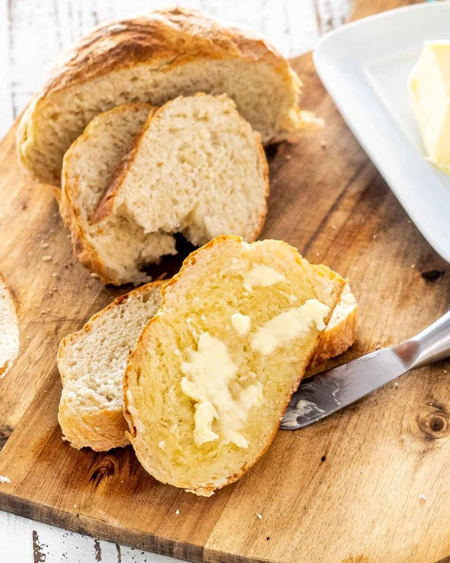

Air Fryer No-Knead Bread

Ingredients
- 3 cup all-purpose flour
- 2 teaspoon salt
- 2 teaspoon instant yeast
- 1.5 cups water (room temperature)
Instructions
- In bowl mix all ingredients until well incorporated. Dough will be sticky
- Cover with plastic wrap and allow to rise for 2-3 hours
- Place an 8-inch round baking pan in air fryer and preheat to 400º
- Flour hands and a piece of parchment paper
- Shape dough into ball and set aside while air fryer preheats
- Once preheated, place parchment paper with dough into hot pan and cover tightly with aluminium foil
- Bake for 20 minutes and remove foil
- Bake an additional 10 minutes or until bread is browned. Bread is cooked if it sounds hollow when tapped